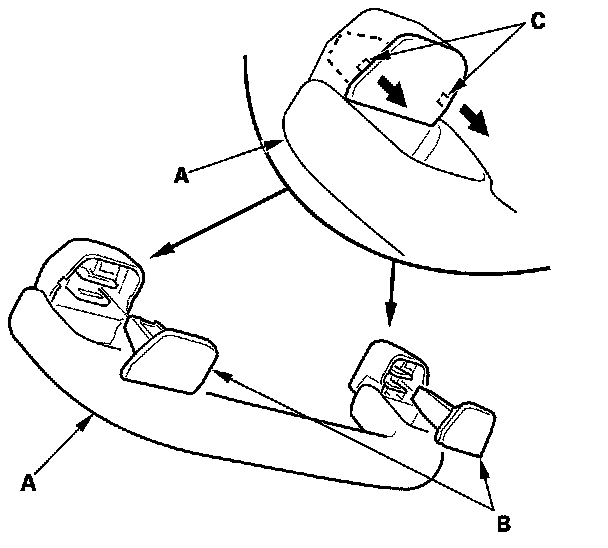
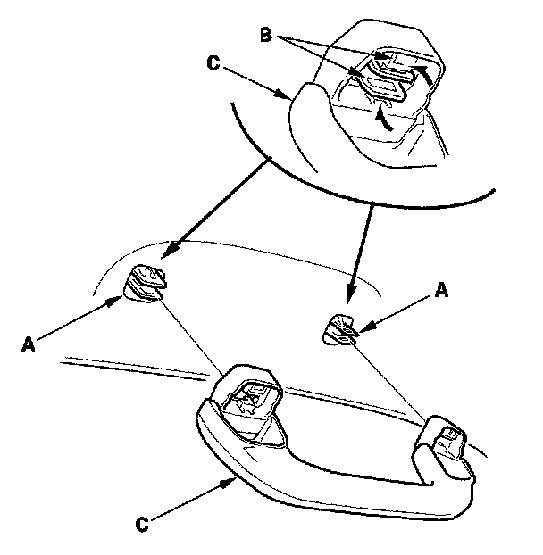
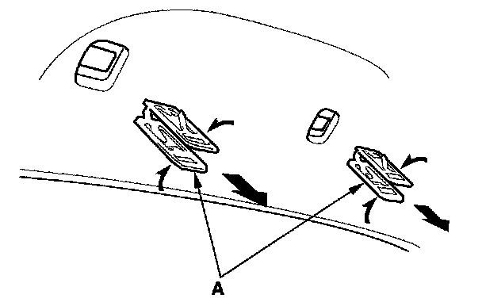
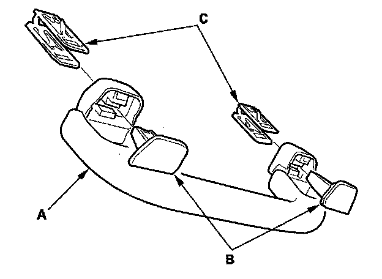
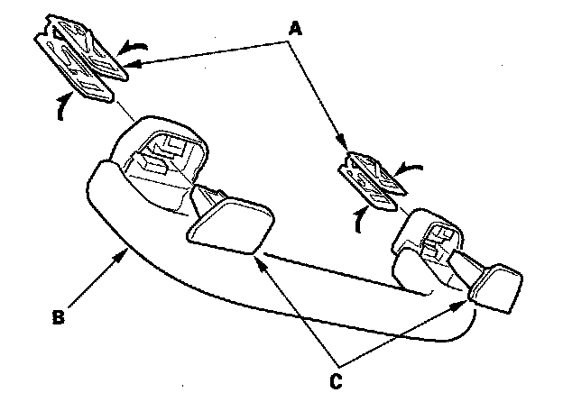
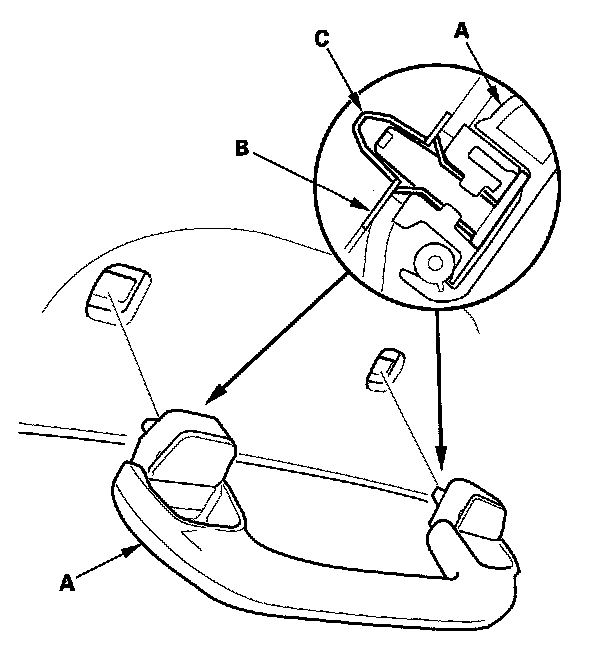

Passenger Assist Handle: Service and Repair
Grab Handle Removal/InstallationSpecial Tools Required
KTC trim tool set SOJATP2014 *
* Available through the American Honda Tool and Equipment Program
NOTE: Use the appropriate tool from the KTC trim tool set to avoid damage when removing components.

1. Lower the grab handle (A), then pull out the caps (B) by prying up at the notches (C) with a small flat-tip screwdriver.

2. While pinching the clips (A), release the hooks (B), then remove the grab handle (C).

3. Using a pair of pliers, remove all of the clips (A) by pinching its hooks.
4. If the side curtain airbag has deployed, replace the grab handle with a new one.

5. If the side curtain airbag has not deployed, to prevent the side curtain airbags from deploying improperly and possibly causing injury, inspect removed pieces and replace them if they have any of these types of damage:
- Any cracks or damage in the grab handle (A).
- Any cracks or stress-whitening in the caps (B).

6. Install the clips (A) to the grab handle (B), then install the caps (C) fully into the clips.

7. Position the grab handle (A) on the bracket (B), and push on the grab handle until the clips (C) snap into place securely.